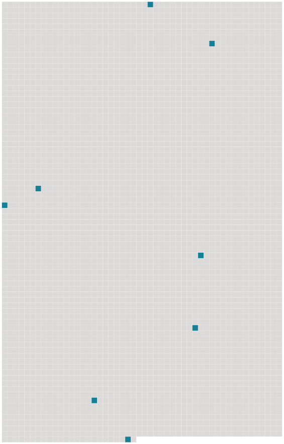

Longueur nb maillons : 8 mentions |
|
[ article ] [20 phrases] C'était le 13 novembre dernier devant le tribunal correctionnel de [Belfort] [58 phrases]
Nous avions rapporté dans notre édition du 29 décembre, comment un dépotoir s'était installé en pleine-ville, derrière un immeuble de la rue James-Long à [Belfort] , et combien cette vision peu ragoûtante perturbait depuis au moins deux ans les riverains. [4 phrases]
Dans la nuit de lundi à mardi, ce sont des décorations installées devant la maison d'un particulier, faubourg de Brisach à [Belfort] , à hauteur de la rue Vautrin, qui ont disparu. [43 phrases]
» [32 phrases]
Mardi, le parquet de [Belfort] a ouvert une information judiciaire pour mise en danger de la vie d'autrui et destruction involontaire d'un bien privé. [28 phrases]
L'explosion s'est produite, vers 4 heures du matin, mardi, dans une ancienne maison de maître abritant six appartements au 13 rue du Tramway à [Belfort] [14 phrases]
-Rattrapé par le destin, la voiture d'un Strasbourgeois brûle à [Belfort] |
 |
Il est possible de télécharger la ressource sur la page Ortolang |
Si vous avez des questions ou vous voyez des erreurs, merci d'envoyer un mail à silvia.federzoni89@gmail.com |